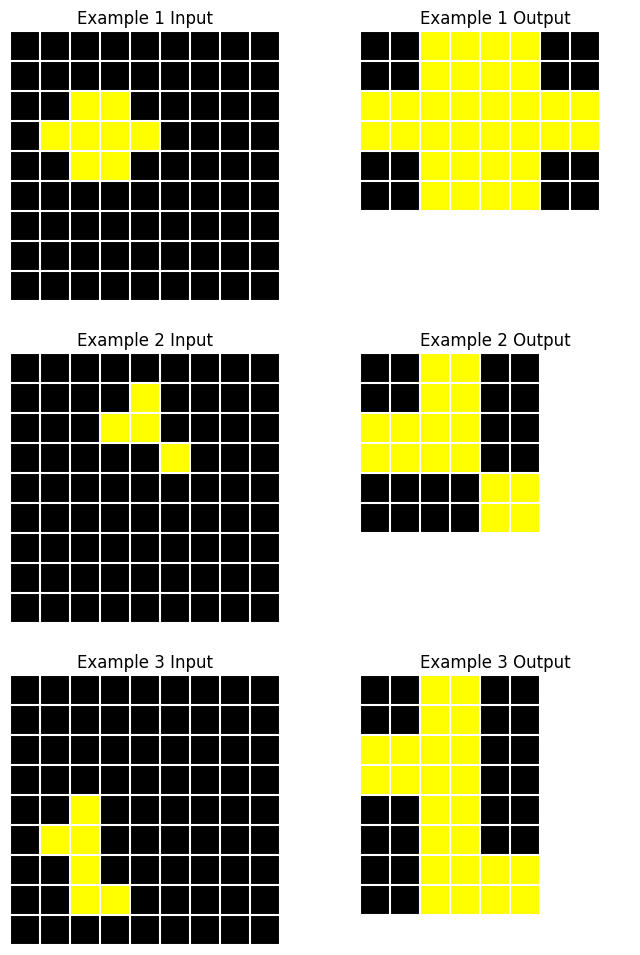
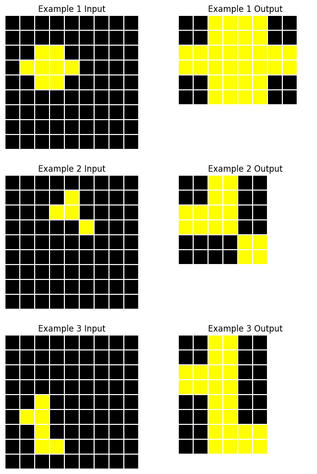

Task: f25fbde4

This module implements two different strategies for getting Claude to generate a description of a given ARC task.
Description (content:str, chats:List[claudette.asink.AsyncChat], method:str)
A single description of an ARC task.
The Description class contains the claudette chats used to generate the description, the final response content, and the method used (‘direct’ or ‘indirect’)
DescriptionGenerator (model:str='claude-3-5-sonnet-20241022', client_type:str='anthropic', client_kwargs:Optional[Dict]=None, direct_sp:Optional[str]=None, indirect_sp:Optional[str]=None, merge_sp:Optional[str]=None)
Generates descriptions of ARC tasks using Claude.
| Type | Default | Details | |
|---|---|---|---|
| model | str | claude-3-5-sonnet-20241022 | Model identifier (defaults to Sonnet 3.5) |
| client_type | str | anthropic | ‘anthropic’, ‘bedrock’, or ‘vertex’ |
| client_kwargs | Optional | None | Optional kwargs for client instantiation |
| direct_sp | Optional | None | Custom system prompt for direct description (if None, uses sp_direct) |
| indirect_sp | Optional | None | Custom system prompt for single pair description (if None, uses sp_indiv) |
| merge_sp | Optional | None | Custom system prompt for synthesized description (if None, uses sp_merge) |
The most straightforward approach is to simply provide an image of all examples in a task and ask for a solution description.
We use a system prompt that explains the objective in detail and instructs the model to perform chain of thought reasoning before formulating the final description.
DescriptionGenerator.describe_direct (task:arcsolver.task.ArcTask|str, n:int=1, temp:float=0.5, prefill:str='<reasoning>', **kwargs)
Generate n direct descriptions of the task concurrently.
| Type | Default | Details | |
|---|---|---|---|
| task | arcsolver.task.ArcTask | str | ARC task or task ID to describe | |
| n | int | 1 | No. of descriptions to generate |
| temp | float | 0.5 | Temperature for generation (higher for diversity) |
| prefill | str | Text to prefill the assistant’s response with | |
| kwargs | |||
| Returns | List | List of Description objects |
Let’s demonstrate with an example task:
Task: f25fbde4

The input grids contain a pattern of yellow cells on a black background forming a continuous path or shape. The output grid is determined by finding the rectangular region defined by the extremal yellow cells in the input (leftmost, rightmost, topmost, and bottommost). In the output, all cells within this rectangular boundary are filled with yellow, while maintaining black cells outside this region, effectively creating a solid yellow shape that encompasses the original pattern’s extent.
This description is nearly right. The wording is strange but it seems to have correctly identified that the output is the minimal bounding box around the yellow shape. However, it has not spotted that the yellow shape has been scaled up in size.
This is a common failure mode for Claude. It often erroneously declares that two similar shapes are identical. It can often form a rough idea of what is happening in a task but when faced with multiple similar objects within grids, it fails to identify and distinguish specific shapes. This motivates trying an alternative approach.
Instead of presenting the entire task—which can sometimes feature 5+ pairs of grids—all at once to Claude, we can instead generate independent descriptions based on individual pairs of grids and subsequently ask Claude to synthesize the information contained in the set of descriptions to form a final unified description.
Pros:
Cons:
DescriptionGenerator.describe_indirect (task:arcsolver.task.ArcTask|str, n:int=1, temp:float=0.6, tools:Optional[list]=None, **kwargs)
Generate n direct descriptions of the task concurrently.
| Type | Default | Details | |
|---|---|---|---|
| task | arcsolver.task.ArcTask | str | ARC task or task ID to describe | |
| n | int | 1 | No. of descriptions to generate |
| temp | float | 0.6 | Temperature for generation (higher for diversity) |
| tools | Optional | None | List of tools to make available to Claude (defaults to [ShapeExtractor.extract_shapes]) |
| kwargs | |||
| Returns | List | List of Description objects |
For this approach, we have also implemented tool-use. In order to help Claude accurately identify shapes, we provide a ShapeExtractor function that can be used
ShapeExtractor.extract_shapes (grid_idx:int, color:str, include_diagonal:bool)
Extract contiguous regions of a specified color from a grid.
| Type | Details | |
|---|---|---|
| grid_idx | int | Index of the target grid |
| color | str | Color of shapes to extract |
| include_diagonal | bool | Consider diagonally adjacent cells as connected? |
| Returns | list | List of extracted shapes (boolean arrays) and their positions |
In our system prompt, we instruct Claude to generate an intial hypothesis about the task solution, and then use the shape extractor tool to inspect shapes as neccessary to inform its final judgement. Claude can choose how many times to call the function and which colored shapes to extract from which grids. Once it has enough information to form a final description, the conversation ends.
The input grid is a 9x9 black grid containing yellow pixels arranged in various patterns. The transformation converts each yellow pixel in the input into a 2x2 block of yellow pixels in the output, while maintaining the relative spatial relationships between yellow elements. The output grid dimensions are reduced to accommodate the transformed pattern while preserving the black background. This transformation creates a blocky, enlarged version of the original pattern in a smaller grid, with the final dimensions adjusted to fit the transformed elements efficiently.
Using this method, it has generated a much more accurate description of the task. We can inspect the chat history to see its use of the tool:
<initial_analysis>
Based on visual inspection:
- Input grid shows a sparse diagonal-like pattern of yellow pixels on black background
- Output grid appears to show a more concentrated arrangement of yellow pixels
- The output grid is smaller (6x6 vs 9x9)
- Initial hypothesis: The yellow pixels might be getting "compressed" into a smaller space while maintaining some kind of pattern
- Key uncertainty: Whether the yellow pixels form a specific connected shape that's being transformed
- Tool analysis would be helpful to:
* Verify if the yellow pixels form a connected shape in either grid
* Count exact number of yellow pixels to see if they're preserved
</initial_analysis>
Let me extract the yellow shapes from both grids:ToolUseBlock(id='toolu_bdrk_01UsGpZS8zyEW238PbE3tZDg', input={'grid_idx': 2, 'color': 'yellow', 'include_diagonal': True}, name='extract_shapes', type='tool_use')Note that the indirect method is significantly more expensive than the direct method. It creates separate chat instances for each pair of grids, including an image and triggering a multi-turn tool-calling conversation.
Direct cost: $0.012
Indirect cost: $0.101DescriptionGenerator.describe_task (task:arcsolver.task.ArcTask|str, n_direct:int=1, n_indirect:int=1, temp:float=0.7, **kwargs)
Generate multiple descriptions of a task using one or both strategies concurrently.
| Type | Default | Details | |
|---|---|---|---|
| task | arcsolver.task.ArcTask | str | ARC task or task ID to describe | |
| n_direct | int | 1 | No. of direct descriptions to generate |
| n_indirect | int | 1 | No. of indirect descriptions to generate |
| temp | float | 0.7 | Temperature for generation (higher for diversity) |
| kwargs | |||
| Returns | List | List of Description objects |
This method allows us to generate descriptions using either or both strategies at the same time.